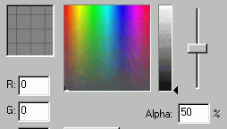
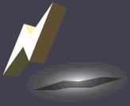
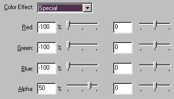

Creating a Drop Shadow


Dropshadows are easy in Flash. There are several ways of creating such, and i will briefly explain some of them.
Simple text.
Make a copy of the desired text, and paste it in place (CTRL + SHIFT + V).
Now press CTRL + SHIFT + [down-arrow] to send the newly placed text to the bottom.
Use the arrow keys to place the shadow.
Change the color of the shadow text to eg. a gray with an alpha of 50%.

Advanced Drop Shadows. (Animated objects etc.)

Make sure your animation is in a movie clip.
Copy your movie clip, (in this case the lightning), and paste in place.
Send to bottom, and place using arrow keys.
Doubleclick the shadow symbol (or click properties).
Enter the below values, to make the movie clip into a 50% black object.

Skew the drop shadow, to gain a feeling of perspective.
This will create an animated drop shadow effect.